Exóticas de combate
Consulte rapidamente armas exóticas organizadas por tipo, origem e aplicação no endgame.
Este catálogo reúne as principais armas exóticas de The Division 2 em um formato direto e organizado para consulta rápida. Aqui você encontra onde cada arma é obtida, como ela se encaixa no endgame e em quais builds ela funciona melhor.
Consulte rapidamente armas exóticas organizadas por tipo, origem e aplicação no endgame.
Veja de forma clara se a arma vem de raid, incursão, progressão especial ou missões lendárias.
Quando disponível, cada arma leva para um guia completo com detalhes de farm, uso e builds recomendadas.
Estas são as armas exóticas que já fazem mais sentido dentro da estrutura atual do site e que se conectam diretamente com raids, incursão, lendárias e builds.
Uma visão rápida e organizada das armas exóticas mais relevantes do portal, com foco em origem, estilo de uso e identidade visual consistente.
Armas versáteis para DPS, builds híbridas e uso geral no endgame.

O Rifle de Assalto Exótico Camaleão pode ser dropado em qualquer lugar do mundo aberto, mas a melhor forma é farmar áreas ou missões com loot direcionado para Rifles de Assalto (AR). Aumente as chances jogando nas dificuldades Desafiante ou Heroica, recompensas de facções ou no modo Summit.

É obtido principalmente concluindo 5 desafios no modo Cume (The Summit). Alternativamente, ele pode cair como saque exótico em qualquer missão/área com loot direcionado para fuzis de assalto ou em Caches Exóticos (recompensas de contagem regressiva/projetos).

A melhor estratégia é farmar o modo Countdown (Contagem Regressiva) com o saque alvo definido para Fuzis de Assalto. Outras formas incluem abrir Caches Exóticos (recompensas de projetos semanais, The Summit ou vendedor da Contagem Regressiva).

Pode ser obtida derrotando inimigos, abrindo baús de armas e em esconderijos exóticos. A melhor forma é farmar em áreas ou missões que tenham fuzis de assalto como alvo de saque. O modo (The Summit) e Countdown também é recomendado para farmar exóticos.
Armas semiautomáticas voltadas para dano preciso, ritmo controlado e médio alcance.

O rifle exótico Doutor Lar (Doctor Home), pode ser obtido principalmente completando a missão de Caçada do General Anderson na "Usina Elétrica Pentco Fairview". Após a conclusão, a arma pode cair como saque em áreas ou missões que tenham rifles como alvo de loot, além de esconderijos exóticos e do modo Contagem Regressiva.
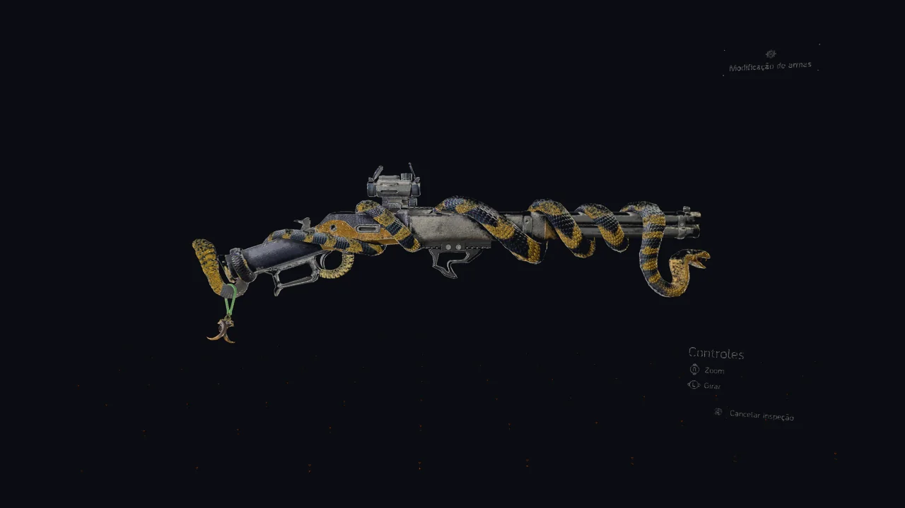
O rifle exótico Diamondback é obtido garantidamente ao completar as três áreas de investigação da Expedição à Faculdade Kenly (Biblioteca, Estação de Metrô e União Estudantil). Após finalizar todas, a Capela da faculdade abre, e o rifle estará no baú de recompensas amarelo na sala à esquerda.

Após a temporada de lançamento, o Bittersweet foi adicionado ao pool de loot geral. Isso significa que ele pode dropar de inimigos nomeados, em áreas de loot focado em rifle (mapa ou Summit/Countdown) e em atividades de dificuldade alta.
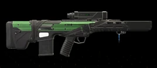
O rifle exótico Vindicator pode ser obtido através de loot direcionado para Rifles no mundo aberto, Countdown, The Summit e Caches Exóticos. Após sua temporada de lançamento, ele foi adicionado ao pool geral de exóticos.
Armas focadas em headshot, controle de alvo e dano disciplinado à distância.
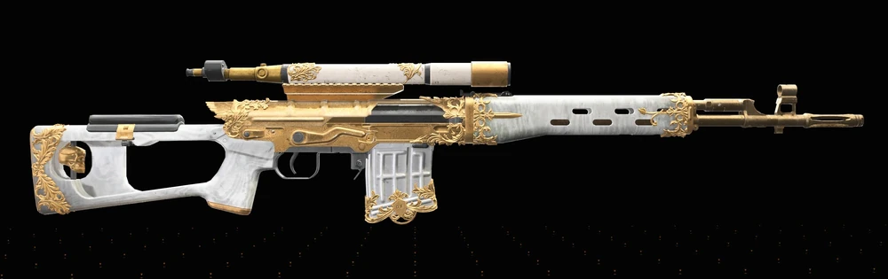
O Rifle de Precisão Lei do Pavor, pode ser obtida principalmente como um "drop" aleatório no mundo aberto, derrotando inimigos nomeados (named enemies). Aumentar a dificuldade do jogo ou jogar com mais pessoas aumenta a chance de obtê-la. Ela também pode aparecer em reservas exóticas e eventos sazonais.

O Rifle de precisão exótico Mantis (Louva-a-Deus) pode ser obtido principalmente através de saques direcionados (Targeted Loot) em áreas com rifles de precisão, no modo Summit ou no Countdown. Após a Temporada 2, ele foi adicionado ao "loot pool" geral, permitindo drop em qualquer atividade.
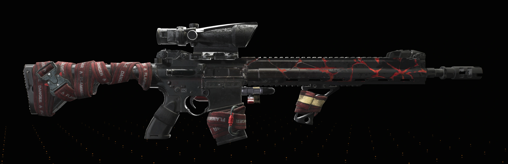
O rifle de precisão exótico Sacrum Imperium em The Division 2 pode ser obtido principalmente através de loot direcionado (targeted loot) de rifles de precisão no mundo aberto, missões, Contagem Regressiva ou na Cúpula The (Summit). Também pode cair de caixas exóticas, chefes do mundo aberto e recompensas de projetos.
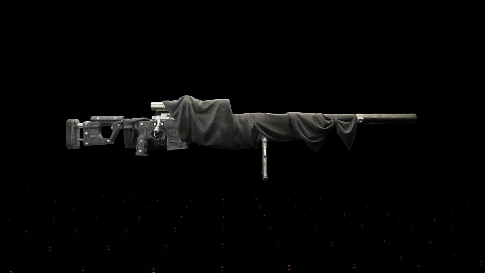
Originalmente, o fuzil era uma recompensa garantida ao atingir o nível 69 do Passe de Temporada da "Temporada 2 do Ano 7: O Pacto". Atualmente, ele faz parte do conjunto geral de itens exóticos. A maneira mais eficiente de farmar é jogar no modo Contagem Regressiva (Countdown) ou no Ápice (The Summit) selecionando "Fuzil de Precisão" como seu saque direcionado.
Armas de curta distância voltadas para burst, mobilidade e combate agressivo.
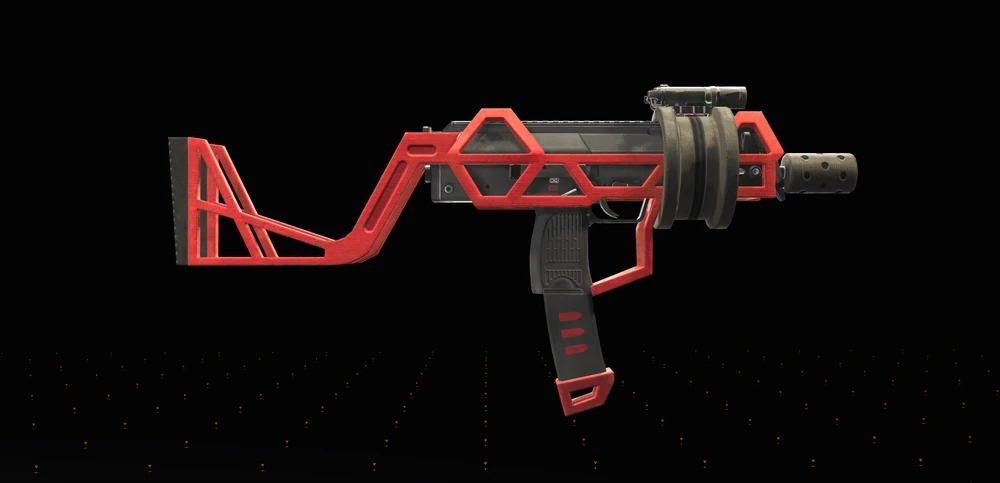
A SMG exótica Bufagpidio / Oxpecker foi obtida originalmente pelo passe da Temporada 3 do Ano 6: Burden of Truth. Depois de entrar no loot geral, pode ser farmada em áreas ou missões com loot direcionado para Submetralhadoras, especialmente no Countdown e no Summit.
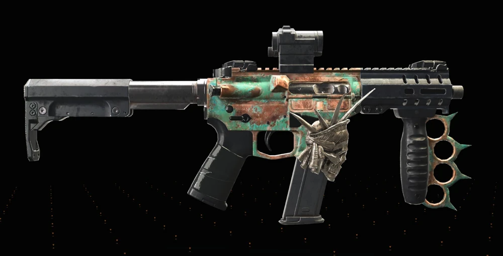
A submetralhadora exótica Lady Morte (Lady Death) em The Division 2 é obtida principalmente no mapa de Nova York (expansão Warlords of New York) ao derrotar chefes de mundo aberto (Open World Bosses). Outras formas eficazes incluem farmar SMGs no modo Contagem Regressiva (Countdown), o modo Cume (The Summit), ou ao abrir Caches Exóticas.
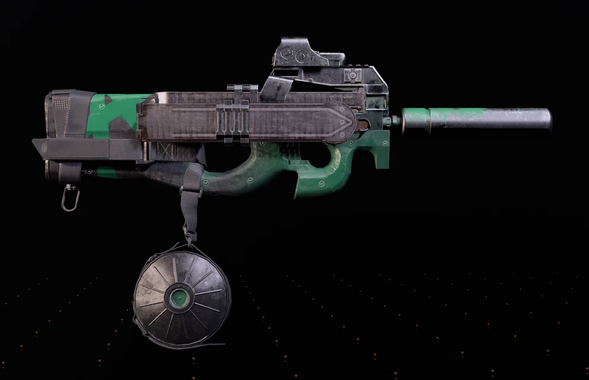
A submetralhadora exótica Tagarela (Chatterbox) no The Division 2 é obtida fabricando-a na bancada após coletar três partes específicas (Cano, Carregador, Corpo) em caixas das Hienas e o diagrama na missão Sede do Banco. É necessário ter chaves das Hienas para abrir as caixas.
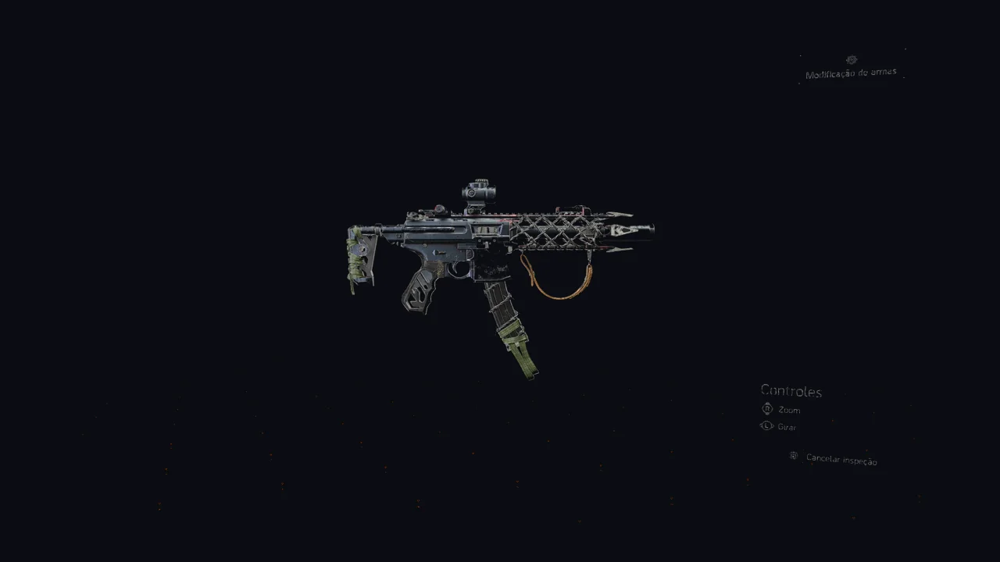
A submetralhadora exótica Tiro Pela Culatra (Backfire) em The Division 2 é obtida principalmente como um drop aleatório no mundo aberto ao derrotar inimigos nomeados, em áreas de loot focado (SMG) ou em dificuldades mais altas. Ela também pode ser adquirida via reservas exóticas ou recompensas de temporadas.
Armas de impacto alto para combate próximo, controle e pressão em elites.
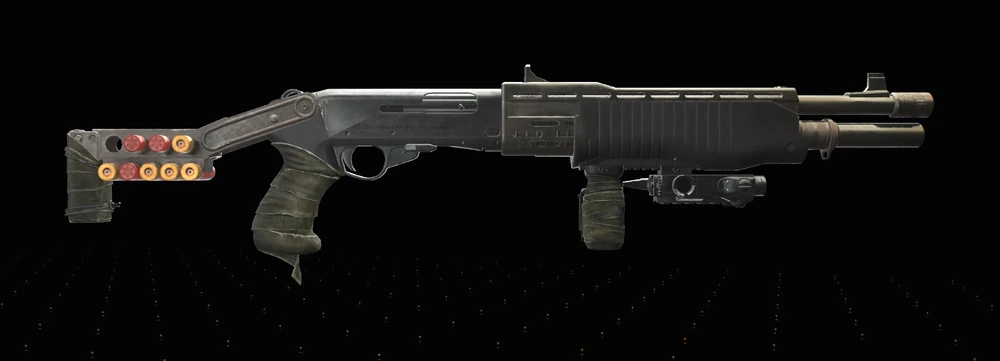
A espingarda exótica Doce Sonhos (Sweet Dreams) pode ser obtida principalmente como drop de inimigos nomeados (bosses) em missões, especialmente as controladas pelas Hienas. Locais comuns incluem missões de alto nível, Contagem Regressiva, A Cúpula (The Summit) e reservas exóticas.
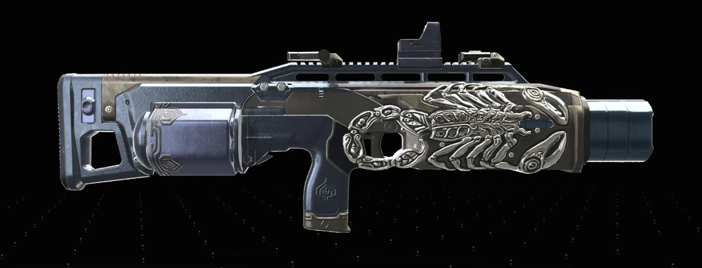
Choque SépticoA escopeta exótica Escorpião pode ser obtida principalmente através de loot direcionado de espingarda (no mapa, The Summit ou Countdown), chefes de mundo aberto, e recompensas de caches exóticas. A maior chance de drop ocorre em dificuldades elevadas (Heroico/Lendário), com inimigos nomeados.
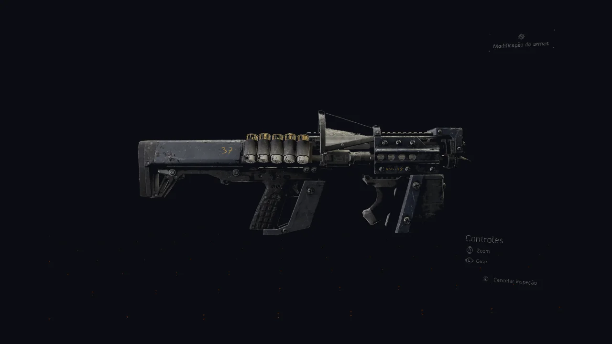
A espingarda exótica Overlord (Overlord Exotic Shotgun) em The Division 2 pode ser obtida principalmente através do Passe de Temporada, atingindo o nível 90 na trilha gratuita. Adicionalmente, ela pode dropar de inimigos, baús de armas, caixas exóticas (Exotic Caches) e em áreas com loot alvo de espingarda.
Armas para fogo sustentado, controle de área e pressão contínua.
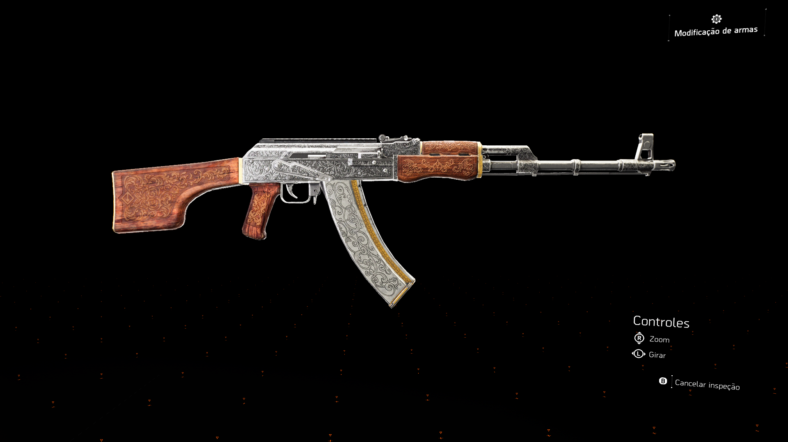
A Pakhan é uma metralhadora leve (LMG), uma arma poderosa com alto dano e pente extenso (pode chegar a 140+ balas). Ela pode ser obtida principalmente através de drops em mundo aberto (inimigos nomeados), caches exóticas, ou comprando o plano de fabricação (se disponível na temporada).
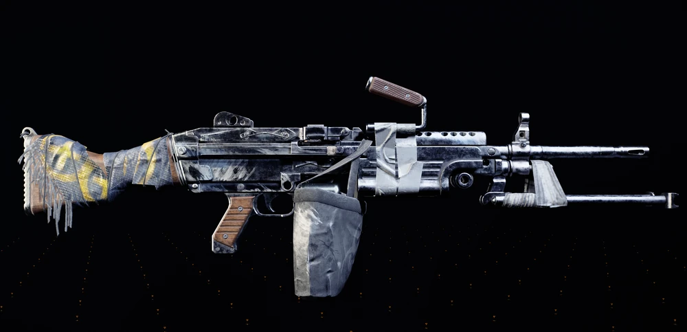
A melhor forma de conseguir a metralhadora leve exótica Pestilência é farmar em áreas com loot direcionado para LMG (Metralhadoras Leves). Locais ideais incluem a Dark Zone (especialmente inimigos nomeados) ou o modo Summit/Ápice. A arma é um drop de inimigos, sem precisar de projetos.
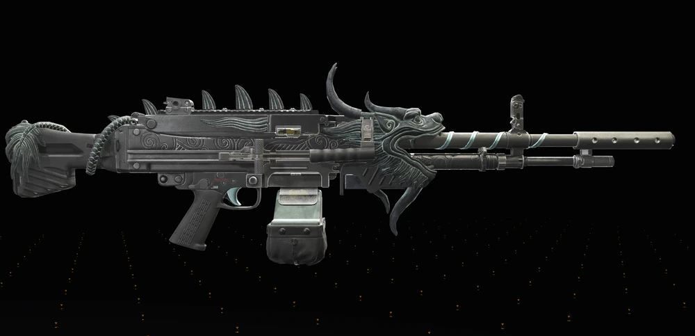
A Iron Lung (Pulmão de Ferro) em The Division 2 é uma metralhadora leve exótica (LMG) que pode ser obtida principalmente através de Caches Exóticos, loot direcionado de LMG no modo Countdown (Contagem Regressiva) ou Summit, e recompensas de atividades de fim de jogo.
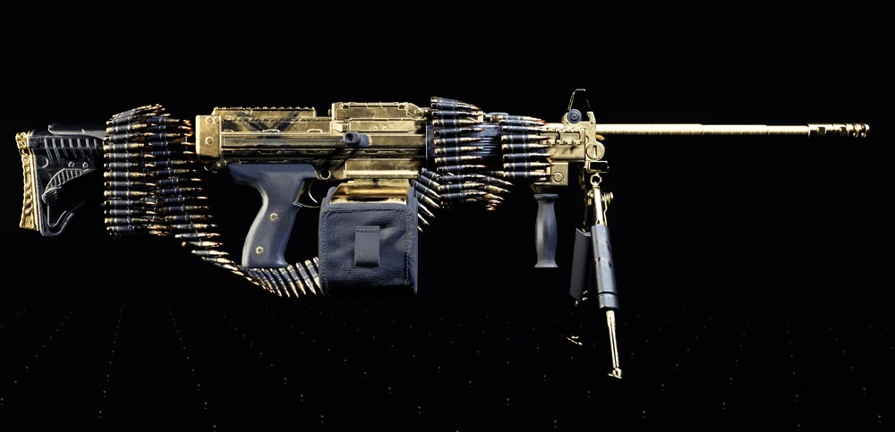
Esta arma pode ser obtida de inimigos, baús de armas, esconderijos exóticos e em qualquer área/missão que tenha metralhadoras leves como alvo de saque. Ela tem uma chance maior de ser obtida de Theo Parnell , James Dragov e chefes nomeados de Rikers.

Pode ser obtida principalmente completando a missão da Caçada do Capitão Lewis no Jefferson Trade Center para ganhar o projeto. Após obtê-la pela primeira vez, ela entra no loot geral, podendo ser farmada em áreas de Metralhadora Leve (LMG) ou depósitos exóticos.
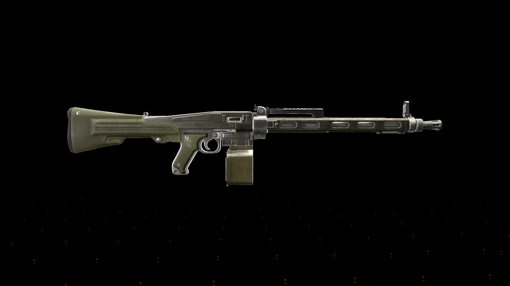
A metralhadora leve exótica Grande Alejandro (Big Alejandro) em The Division 2 pode ser obtida principalmente através do Passe de Evento de Aniversário (níveis de recompensa) ou em caixas de eventos, conforme visto neste vídeo. Também é possível obtê-la via farm de LMGs (Metralhadoras Leves) na Contagem Regressiva ou em retaliações (targeting loot) contra os Verdadeiros Filhos.
Armas secundárias com talentos únicos para suporte, burst ou sinergia com builds específicas.
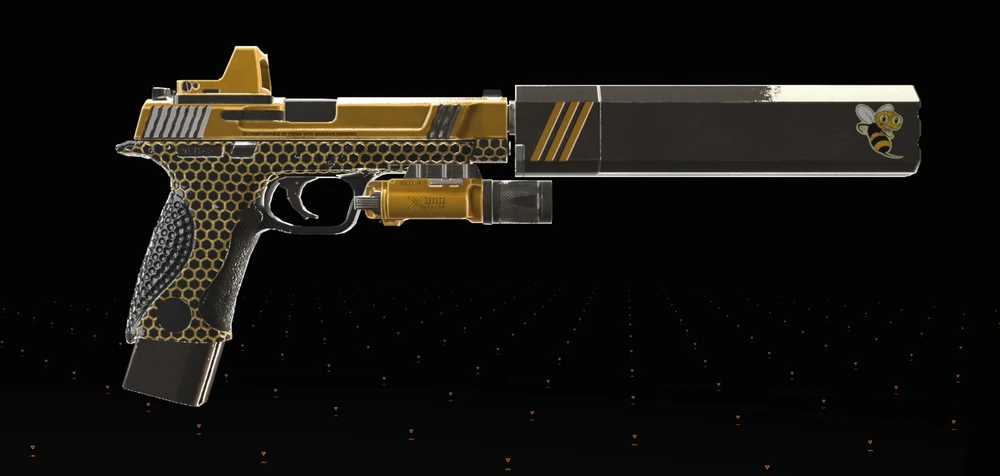
A pistola exótica Abelha Operária (Busy Little Bee) dropa de forma aleatória no mundo aberto, com maiores chances ao derrotar inimigos nomeados ou em atividades de alto nível. Aumentar a dificuldade do jogo ou jogar com uma equipe completa aumenta as chances de drop desta arma, que aplica veneno, desorientação e choque.
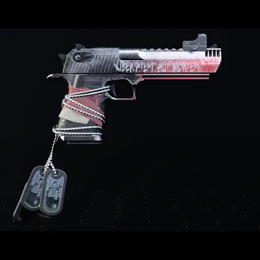
Liberdade ou MorteA pistola exótica Liberdade (Liberty) no The Division 2 é obtida principalmente através de fabricação (crafting), e não por drop direto. Você precisa coletar 4 componentes específicos de chefes dos True Sons em missões no modo Difícil ou superior, além de uma pistola Desert Eagle (D50) de alta qualidade.
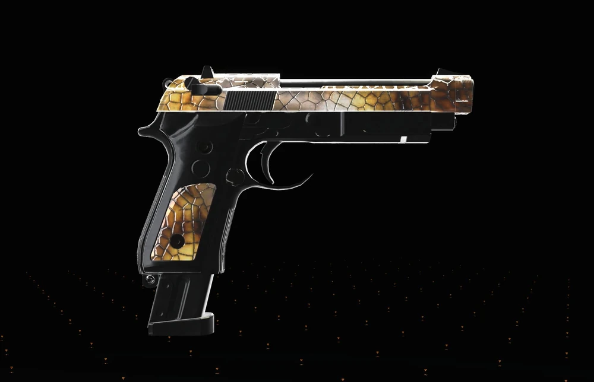
Canção dos MosquitosA pistola exótica Liberdade (Liberty) no The Division 2 é obtida principalmente através de fabricação (crafting), e não por drop direto. Você precisa coletar 4 componentes específicos de chefes dos True Sons em missões no modo Difícil ou superior, além de uma pistola Desert Eagle (D50) de alta qualidade.
Esta leitura rápida ajuda o jogador a sair do catálogo e já pensar em aplicação prática.
Com a vitrine principal em exoticas.html e este catálogo focado em armas exóticas, o portal fica mais organizado para consulta rápida, builds e expansão futura do conteúdo.